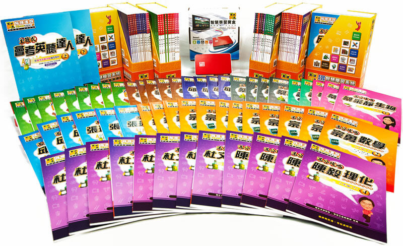
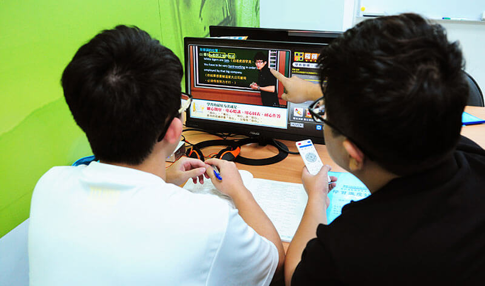
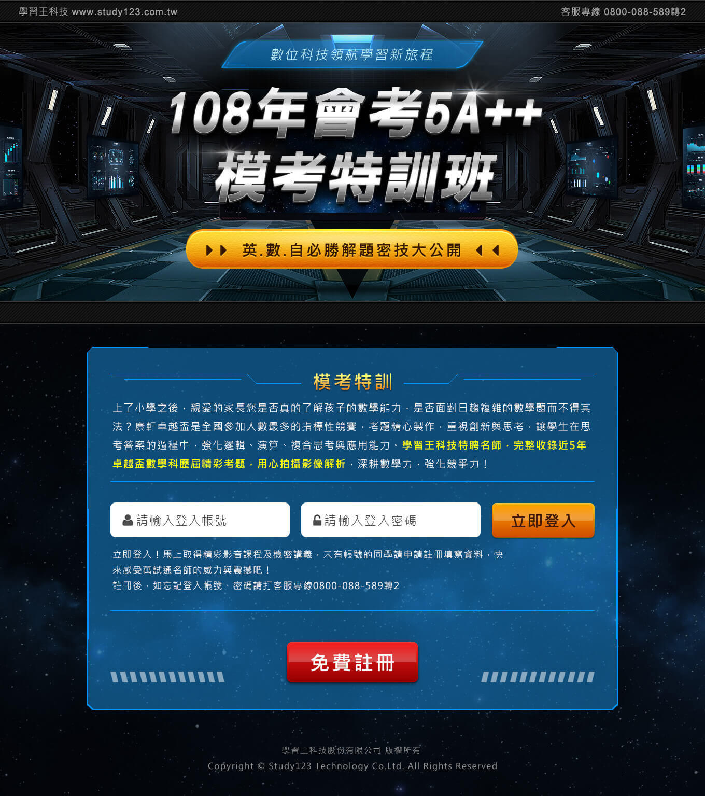
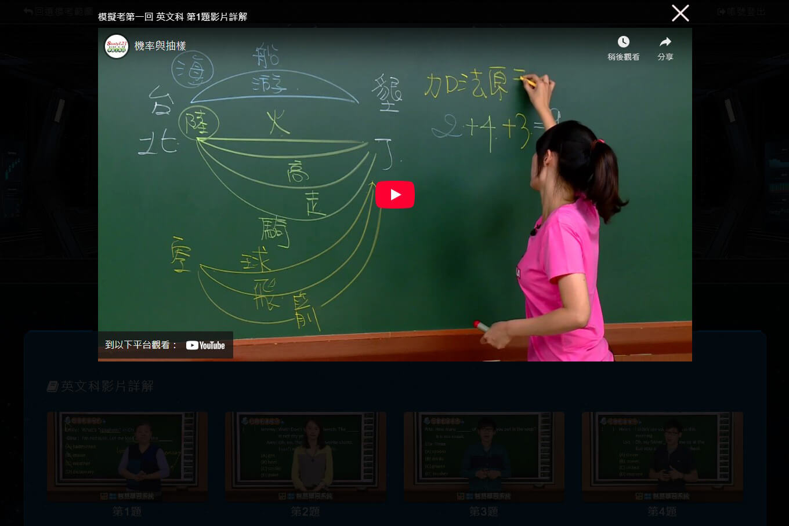
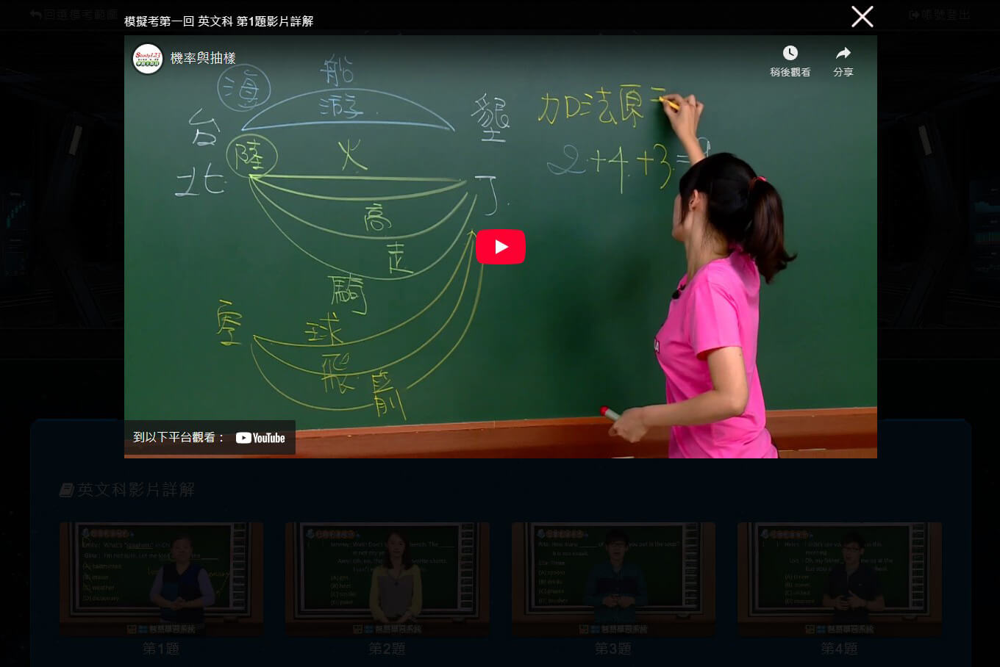
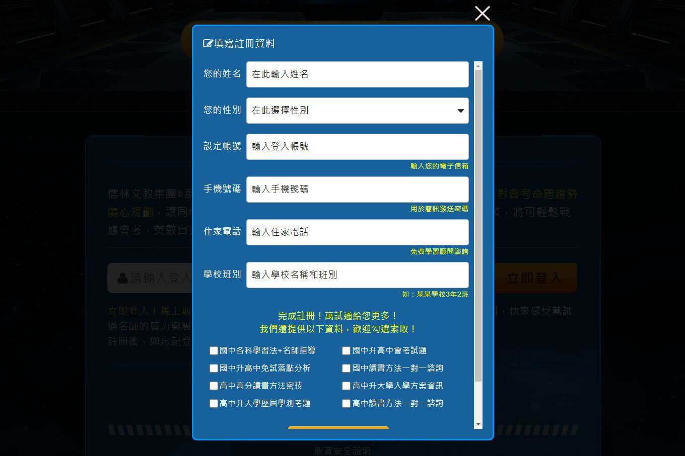
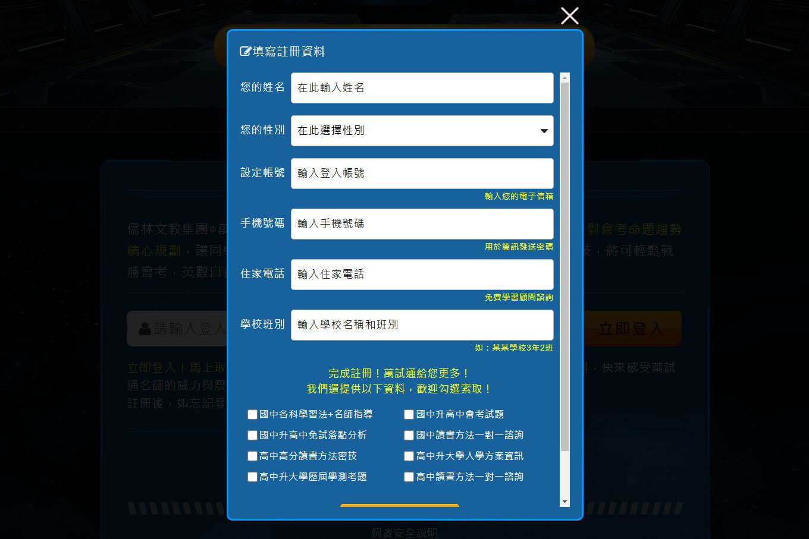

產品發想-案例展示
回作品集
一、前言
當時服務的教育科技公司已有產品為國、高中參考書，搭配硬碟存放教學影音，
作為一套實體產品給予業務人員銷售。
作為一套實體產品給予業務人員銷售。


並搭配手機APP作額外的加值服務。
二、個人擔任職務：產品設計師
任務緣由：
公司決策者希望發想一套網站學習產品，將參考書、影音內容放置於網站，
讓學生、家長透過網站學習和付費，使營運減少對業務人員的依賴。
讓學生、家長透過網站學習和付費，使營運減少對業務人員的依賴。
個人釐清公司現有產品，分析網站優劣勢，
優勢：
1.符合學生搜尋資訊習慣。
2.減少營運對業務人員的依賴。
3.方便收集學生的學習資料。
1.符合學生搜尋資訊習慣。
2.減少營運對業務人員的依賴。
3.方便收集學生的學習資料。
劣勢：
1.家長擔心學生使用電腦、手機無法專心學習。
2.可能影響實體產品銷售，使業務人員不滿。
3.建置網站的硬體、流量、技術，收支難以預估。
1.家長擔心學生使用電腦、手機無法專心學習。
2.可能影響實體產品銷售，使業務人員不滿。
3.建置網站的硬體、流量、技術，收支難以預估。
掌握情況提出「最小可行性」方案，製作「影音解答題本的活動網站」

目的：
低成本獲得更多確切資訊，使推估的優、劣勢情境更加清晰，
驗證產品模式是否可行，減少進入市場的營運風險。
低成本獲得更多確切資訊，使推估的優、劣勢情境更加清晰，
驗證產品模式是否可行，減少進入市場的營運風險。
三、思考產品運作要點
1.如何解決影音流量成本？
運用第三方平台(youtube)進行串流，0成本，同時推廣公司youtube的官方頻道。


2.如何導入活動網站的流量？
透過業務人員了解客群需求產生的接觸熱點，發想行銷方式。
學生段考前1~2禮拜，是尋求學習幫助的熱點。
以考前猜題、名師影音為誘因，
於學校門口發送DM(附網站QRcode)作宣傳，吸引學生註冊。

以考前猜題、名師影音為誘因，
於學校門口發送DM(附網站QRcode)作宣傳，吸引學生註冊。

3.評估成本
以公司現有影音和題本為內容，第三方平台做影音串流，
除人力製作成本、DM印刷1~2萬元沒有其他額外開銷。
除人力製作成本、DM印刷1~2萬元沒有其他額外開銷。
4.評估價值
- 收集學生註冊資料，擴充業務人員客戶名單。
- 紀錄學生操作資訊，給予業務人員銷售參考。
如：A學生大多觀看英文解題，可電訪A家長推銷英文教材。 - 以活動網站為例，了解家長的接受度和看法，作為後續開發依據。
- 蒐集流量數據，評估網站硬體和技術成本。
- 驗證網站能為實體產品的助力，減少業務人員反彈。
四、產品思維展現
1.評估優、劣勢，以發展優勢、減少劣勢為出發點，發想產品模式。
2.以低成本有效率「最小可行」方案，收集有利產品開發之資料。
3.思考客群需求情境，推想接觸熱點，成功導入流量並獲取銷售關鍵資料。
4.能思考產品價值是否高於開發成本。
五、成果
1.受業務人員肯定，當月實體產品成交率顯著提升(與上月份相比成長近20%)。
2.獲公司決策者認同，導入現有商業模式循環運作。
3.活動網站模組化，後續人工成本僅替換視覺圖片。
4.收集客群對網站產品的看法，使後續方向更加清晰。
5.通過利害關係人(業務人員、編輯部、決策高層)了解公司業務邏輯，使工作有效融入營運團隊。
已瀏覽完 產品發想思維-案例展示